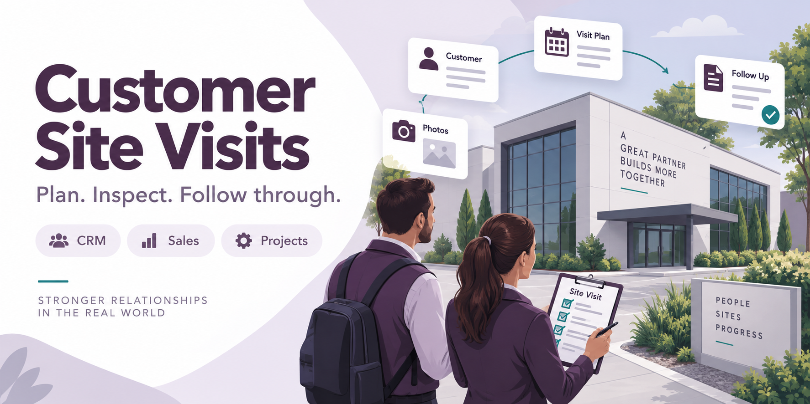
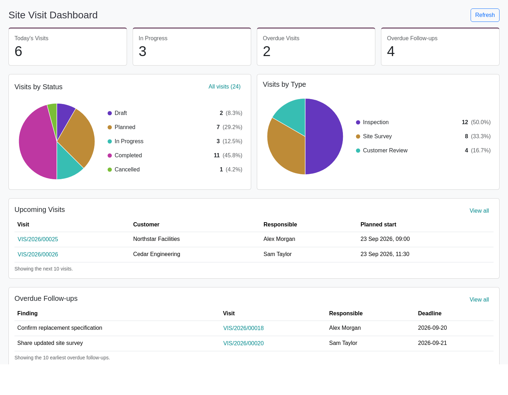

Customer Site Visit Management
Bring customer inspections, site surveys and field visits into your Odoo workflow. Plan the visit, guide the team with checklists, document the outcome and turn findings into accountable follow-ups.
From planning to follow-up
Give each visit a unique reference such as VIS/2026/00025, using the VIS/YYYY/xxxxx sequence.
01
Record the customer, site contact, purpose and assigned team.
02
Set the planned start and end, visit type and checklist.
03
Check in, complete checks and record photos and findings.
04
Validate required checks, check out and prepare the report.
Draft → Planned → In Progress → Completed
A Cancelled state handles visits that will not proceed. Completion schedules Odoo activities for eligible follow-up findings.
Manager dashboard
See today’s visits, visits in progress, overdue visits and overdue follow-ups. Explore status and visit-type charts, then open the underlying records directly.

Actual module dashboard component rendered with illustrative sample data. The dashboard is available to Sales managers; records follow the current user’s access and company rules.
Connected business context
Link each visit to the business records your team already uses. Site Visit smart buttons help you move between the original record and its visits.
Keep site surveys and customer visits connected to an opportunity.
Link visits to a quotation or sales order for commercial context.
Keep customer site work associated with the relevant project.
Link the visit to a task to preserve delivery context.
Included features
Keep preparation, evidence, customer acknowledgement and follow-up together.
Select the customer and site contact, assign a responsible user and include multiple employees on the visit.
Record actual arrival and departure. View planned start/end times alongside calculated actual visit duration.
Configure visit types with reusable checklist templates. Required checklist items must be completed before closing the visit.
Record findings and follow-up actions, with a responsible person, deadline and completion status.
On visit completion, eligible findings create native Odoo To Do activities for the assigned person and deadline.
Organize visit photographs by stage and add captions to preserve visual context.
Document what your team observed and recommend next steps in dedicated report fields.
Store the customer representative’s name, comments and an uploaded customer signature image.
Print a Customer Site Visit Report containing visit details, checks, findings, observations, recommendations and acknowledgement.
Plan visits on a calendar and use list/search views, filters and grouping to find the records you need.
Keep discussions and activity tracking attached to the visit using Odoo’s native collaboration tools.
Reuse Odoo Sales user/manager permissions and multi-company record rules to control visit visibility.
Check-in and check-out latitude/longitude fields are present for future integrations. Automatic GPS capture, live tracking and geofencing are not included in this version.
Prepare the checklist. Record the visit. Assign the next action. Share a structured PDF report.
Before you install
Designed for Odoo 17 teams working with CRM, Sales, Projects and Employees.
The manifest depends on Web, Mail, CRM, Sales Management, Project and Employees (HR). No Enterprise-only dependency is declared. Validate installation in your target Odoo 17 environment.
The module reuses Odoo Sales groups rather than adding separate Site Visit groups. Sales users see their own and unassigned visits; users with all-document access can see additional visits within allowed companies. Dashboard and configuration menus require Sales manager access.
It stores planned start/end times and calculates actual duration from check-in/check-out. A separate planned-duration or variance metric is not included.
The visit stores a customer signature image. A digital signing workflow or signature-pad capture is not included.
Visit details, checklist results, findings, observations, recommendations and customer acknowledgement/signature. The current PDF does not embed the photograph gallery.
Use the navigation links above to jump between sections. Inside Odoo, dashboard counters, charts and smart buttons open relevant records.
For questions about Customer Site Visits or help with the module, contact Mitchel Admin.
erpmitchellodoo@gmail.com